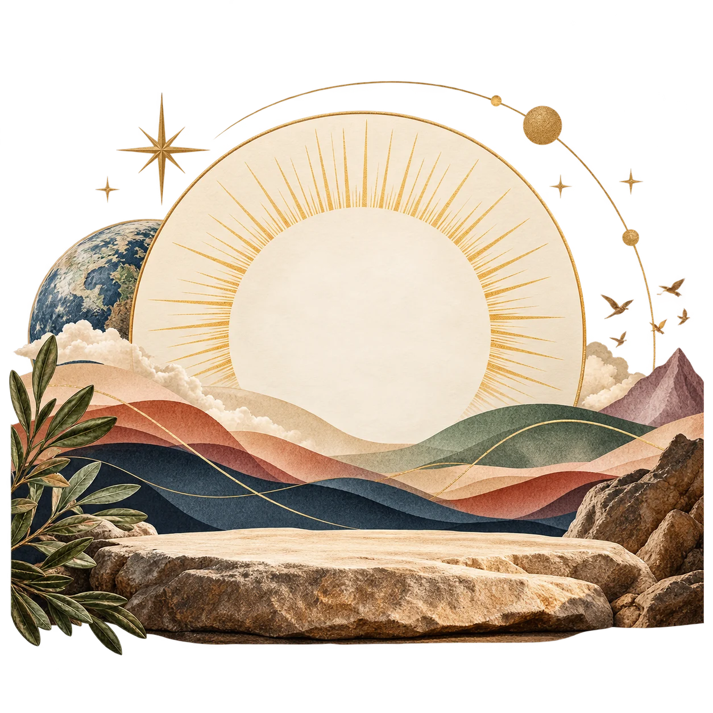

20 Study Devotionals
Each devotional is a self-contained study that introduces a captivating science topic and uses Scripture to deepen your awe of God’s design.

A study devotional
Discover God’s signature woven throughout creation through 20 transformative study devotionals.



Where faith meets the wonder of science
For over 25 years, Christine Beltz has been captivating her science students with a simple truth: every great creator leaves a signature within their work.
Picasso used geometric shapes. Beethoven composed with dramatic intensity. Frank Lloyd Wright integrated his designs seamlessly with nature. In the same way, God has woven His signature throughout all of Creation.
BEHOLD! teaches you to recognize that signature — to see the fingerprint of the Creator in entropy and photosynthesis, in salmon migration and the human body’s immune system. As you study these 20 science-based devotionals, you’ll learn to be captivated by God’s character as revealed in His creation.
Whether you’re a longtime believer or just beginning your faith journey, this book invites you into a deeper, more awe-filled relationship with the God of all creation.
There are things about God that people cannot see — His eternal power and all the things that make Him God. But since the beginning of the world those things have been easy to understand. They are made clear by what God has made.
Inside the book
Each devotional is a self-contained study that introduces a captivating science topic and uses Scripture to deepen your awe of God’s design.
Each topic weaves together multiple Scripture passages to illuminate how God’s character is reflected in the science you’re studying.
Reflection questions and prompts invite you to go deeper, encouraging personal exploration and spiritual growth through Scripture and prayer.


Your path of beholding
Pick a science topic that intrigues you and captures your curiosity about God’s creation.
Read the science and explore Scripture passages that reveal God’s signature in that topic.
Ponder, pray, and journal your insights as God’s truth becomes personal to your heart.
Discuss with others or use what you’ve learned as a springboard for faith conversations.
Getting started
One devotional per week is a wonderful rhythm that allows time for thoughtful study and reflection. You may also study at your own pace — faster or slower depending on your schedule and spiritual journey.
Study individually for personal devotion, with a friend for accountability and discussion, as a family to teach the next generation, or in a group to explore together. Topics can be studied in any order.
Choose your format
A keepsake edition for your shelf, study group, or gift-giving.
Lightweight and easy to carry to church, class, or small group.
Read and highlight on your phone, tablet, or e-reader.
Ready to begin?
Begin your journey of beholding God’s character revealed in His creation. Whether you study individually, with a friend, as a family, or in a group, BEHOLD! will transform the way you see God’s hand in the world around you.